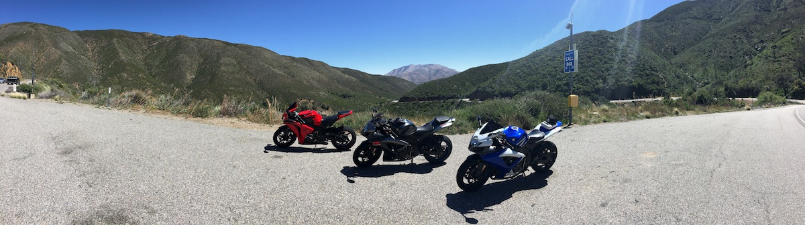
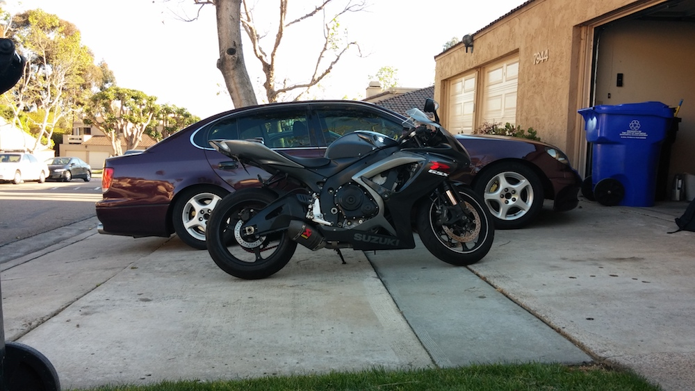

<div>
  
  <div class="jumbotron text-center clearfix">
    <h2>2007 Suzuki GSX-R750</h2>
    <span class="text-center col-xs-12">
      Mods:
      <ul class="list-unstyled">
      <li>Akropovic exhaust</li>
      <li>FP Racing short levers</li>
      <li>Driven 520 chain kit with -1R+2F sprockets and EK MVXZ chain</li>
      <li>Shogun Frame Sliders</li>
      <li>Vortex rearsets</li>
      <li>Stompgrip Tank Pad</li>
      <li>DDM Tuning 35w 6k HID for low-beams</li>
      <li>Custom fender eliminator that I made with sheet metal</li>
      <li>Ricks Motorsports Rectifier</li>
      <li>Ricks Motorsports Stator</li>
      </ul>
    </span>
    
    
    <span class="text-center col-xs-8 col-xs-offset-2" style="margin-bottom:3rem;">
    4/22 Trackday at Chuckwalla
    </span>
    <iframe width="560" height="315" src="https://www.youtube.com/embed/CpZ9Zp_fOOk" frameborder="0" allowfullscreen class="col-xs-8 col-xs-offset-2"></iframe>
    <span class="text-center col-xs-8 col-xs-offset-2">
    8/21/16 Trackday at Buttonwillow 
    </br> <b>Warning: Turn down the volume</b>
    </span>
  </div>
</div>